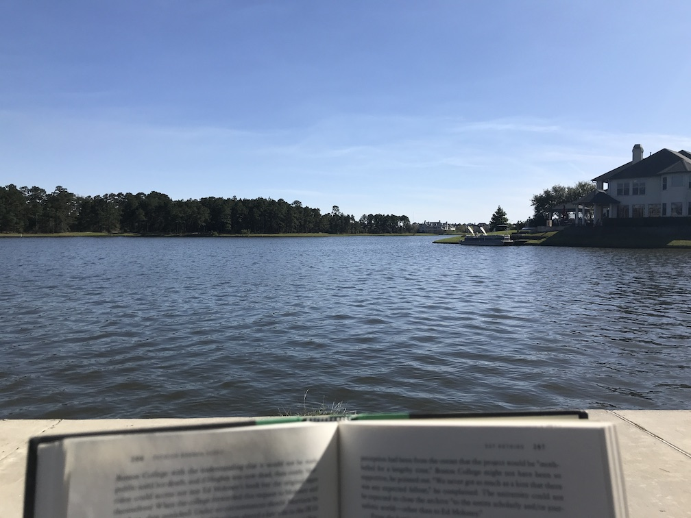

My experience with living through the COVID-19 pandemic (C19), from its inception to my vaccination. First, a personal timeline is discussed, followed by thoughts on specific aspects of the pandemic.
Note to reader: A lot of this is coming from memory a year later, so I may be slightly inaccurate. Note to self: do a better job of recording events like this!
I first heard about C19 circa January 2020 from a Chinese student who worked at my lab. He mentioned something about a virus in his hometown of Wuhan, followed my a look of surprise when I said I hadn't heard of it. (I rarely consume the news, and at this point it was relatively obscure in the U.S.) I carried on as normal with my life, only pausing to Google it for a bit after the conversation.
On 23 January 2020, I received an email from my university stating:
Earlier today, Texas A&M University was notified by the Brazos County Health District that a student may have a possible case of novel coronavirus. [This student had just come back from Wuhan.]
Texas A&M continues to work with its Student Health Services and the Brazos County Health District.
Officials have described the immediate health risk to the campus community as low.
As I recall, shit hit the fan for Texas A&M. International students began wearing masks, much to the amusement of domestic students (who's laughing now!). Hand sanitizer and N95/P95 masks sold out within days. Staple foods flew off the shelves, forecasting what was to come in the next 45 days. The case was confirmed negative, and things went back to pseudo-normal, but with more caution all-around via hand-washing and more masks here and there.
Cases around the world and U.S. continued to increase as we watched and rationalized that it wouldn't, it couldn't get that bad here. After all, we were a fully-developed country and this was just another type of flu, right? Wrong. In early March I read Seeing the Smoke, marking the first instance of me realizing the severity of C19 and the importance (at the time) of properly preparing for what it might bring. I immediately called my father and had an impassioned discussion (read: argument) about why he and my mother should stop whatever it is they were doing and go to the grocery store to stock up. I was greeted with apathy and a you're-blowing-this-out-of-proportion tone, leading to me hanging up on him.
I still remember my last normal memory before everything really kicked off. I was relaxing at Northshore Park in The Woodlands reading Say Nothing and Human Accomplishment on a gorgeous, not-a-cloud-in-the-sky, balmy afternoon waiting for my brother and sister-in-law to make it into town. Children were playing, no masks were in sight, everything was normal. The next day we watched my brother race his half marathon, followed by post-race snacks among throngs of people. Still no masks, still no worries.
I drove back to my parents' home to begin my Spring Break vacation. Next week's classes were soon canceled that Thursday to much excitement from the student body. "Woo-hoo! Another week of vacation!" many of us thought, not understanding that this was just the beginning. It was around this time that fear and panic gripped the nation. Reports were coming out of various cities of toilet paper shortages. My family was confused. Toilet paper? Of all things? But lo and behold, the grocery store shelves were cleaned out. We were not exempt. I accompanied my mother to the grocery store where we filled our cart to the brim with non-perishables, not unlike a vast majority of other shoppers. But this time water was also clearing out. More masks were being worn.
We spent the next few months almost entirely isolated. I ventured to friends' houses a handful of times to hang out in the backyard, but didn't dare go to the forbidden zone: inside. I read War and Peace and quite a bit of online content, exercised like crazy, played a lot of Call of Duty: Warzone, and worked on this website.
And it stayed like this for months on end. Cases began to rise towards the middle of summer, reaching a seemingly monstrous 66,000 cases/day peak in July. We continued to mostly stay inside but began to learn how to live with it through outdoor activities and online hangouts.
Cases rose again in late October, eventually peaking in early January at a whopping 250,000 cases/day. I went full-on hermit mode and had minimal social interaction, besides walking with a single friend outside and seeing my mom every other weekend or so.
In the spring I received two doses of the Pfizer vaccine, effectively marking the end of C19 for me.
One talking point for those who don't take C19 seriously is that they refuse to "live in fear". Of course, there is a difference between caution and fear, and it's not necessarily a fine line.
I lived in fear. I had read too many anecdotes of athletes dealing with major aftereffects of C19 long after actually having it. My parents were both a bit older and had underlying health conditions that made them more vulnerable. People my age and in good health had severe reactions, some even dying. I am a student of science, a believer and proponent of statistics and probability, and as one, I recognize and understand the likelihood of me falling severely ill is small, negligible some might say. But risk tolerance must be considered when taking into account probabilities—the lower the risk tolerance, the lower the probability the event occurs must be. Based on my risk tolerance (very low) and the probability of me catching C19 (using values from previous months), I fell below the threshold for continuing to live my life as normal (in regards to choices within my power, everyone had to abide by business closures, etc).
I do not regret this decision. While I admit my mental health suffered through the pandemic, it would have been much worse had I contracted C19 and experienced the major aftereffects. My mental health tends to track my physical health, i.e., when I'm sick or injured, my mental health deteriorates at a much faster rate. Again, this comes down to personal risk tolerance.
The aforementioned line between caution and fear is also dictated by risk tolerance. Caution to some is avoiding large crowds, while to others that's fear. The same applies for the plethora of other decisions people chose to make or forgo during the course of C19.
Note that some of these positives are another person's negative.
A vast amount of companies were forced to transition to WFH, which I consider it a net positive for the average employee. For one, no more commuting is needed. This saves an average of 54 min/day per commuter. The WFHer gets more personal time. Some companies, such as Twitter, announced the WFH option being available forever, allowing employees to move to their desired city. Adults get to spend more time with their children and significant others
I spent March-September in my childhood home with both my parents, which was actually very fortunate considering my father died in September. Most of my other friends got much closer with their housemates, be it their family, friends, or strangers. We were all forced to bond out of necessity, and some of us made the best of it.
There is little debate on the efficacy of masks if properly made, worn, and performed with other prevention methods (social distancing, talking with quieter voices).
Sources can be found here:
I still see people that are shocked that masks became politicized. While I didn't predict it, the outrage from some groups on mask mandates did not surprise me in the slightest. To those groups, mandatory mask requirements represent the government's infringements on their freedoms, namely the freedom of choice, i.e., they shouldn't have to wear a mask if they don't want to. I understand this and their thought process: why should I have to wear a mask if I'm not worried about getting the virus? This argument is akin to claiming any possible negative effects from not wearing a seatbelt only impact the non-wearer. Wrong! The doctor who should be operating on that other patient now has to operate on that idiot who wasn't wearing his mas...seatbelt. That hospital bed is now taken up by that idiot who wasn't wearing his mas...seatbelt. So in the end that argument void.
Going back to the core of the problem (government mandating masks and small-government groups opposing it), there's not much to be said. Yes, the government is laying down the law for what can and can't be done, but that's done every day in the form of laws, and in the case of most laws, they're put in place to protect the citizens they are enacted on. The mask mandate wasn't put in place for our leaders to flex their powers and force submission, it was to protect us.
Despite rumors going around on the harmful effects of masks on the wearer, such as increased levels of CO2 consumption, there have been no studies that prove such. There are, however, studies that show no major adverse health effects occurred during prolonged mask wearing.
Adverse Effects of Prolonged Mask Use among Healthcare Professionals during COVID-19, Rosner:
314 respondents reported adverse effects from prolonged mask use with headaches being the most common complaint (n = 245). Skin breakdown was experienced by 175 respondents, and acne was reported in 182 respondents. Impaired cognition was reported in 81 respondents. Previous history of headaches (n = 98), skin sensitivity (n = 164), and acne (n = 121) were found in some respondents. Some respondents experienced resolved side effects once masks were removed, while others required physical or medical intervention.
And another article on masks' effects on oxygen levels, CO2 levels, and the immune system.
The evidence and common sense are all there.
C19 was, without a doubt, one of the most impactful, sustained events that has occurred in the past 100 years. The lessons learned are many and will hopefully be applied in future scenarios (but hopefully not because they won't happen, right?!). A few things I see happening below based on my own thoughts and readings (written 21 March 2021).